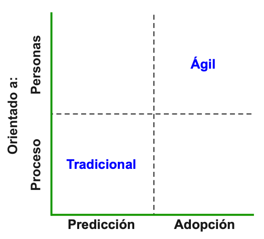
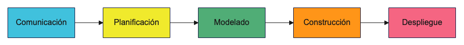
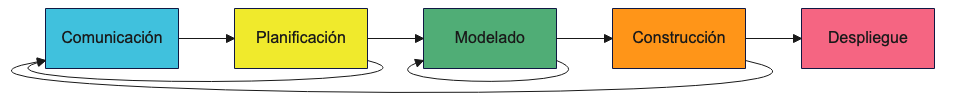
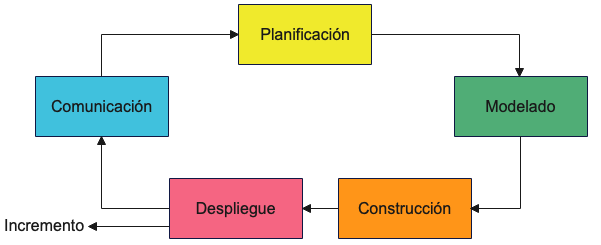
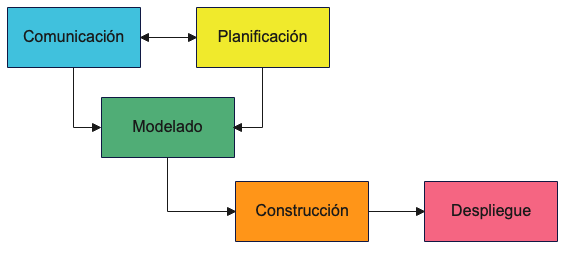
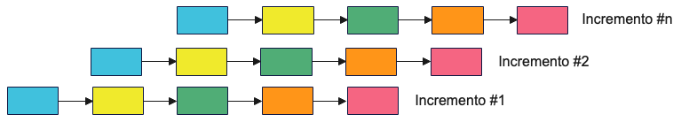
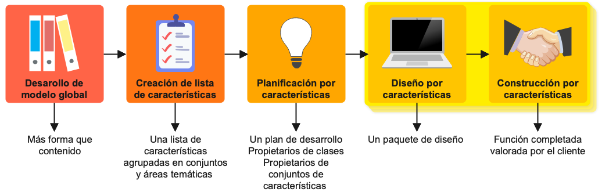
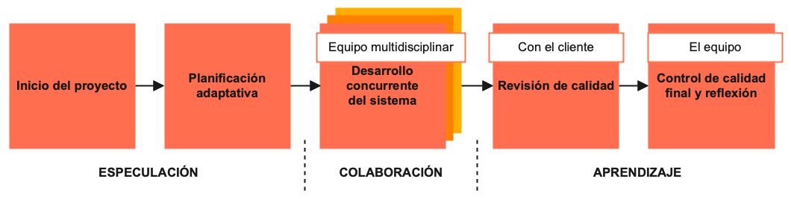

Introducción a las metodologías ágiles
Introducción
Las metodologías tradicionales siguen una serie de fases estrictamente definidas, donde la introducción de cambios durante el desarrollo del proyecto resulta muy costosa y requieren grandes volúmenes de documentación.
Las metodologías ágiles intentan resolver los problemas de las metodologías tradicionales, enfatizando la agilidad y afrontando la incertidumbre, dando la oportunidad de evaluar funcionalidades del software durante el ciclo de desarrollo.

Modelos de proceso y metodologías
Proceso de software: es una serie de actividades relacionadas que conducen a la elaboración de un producto de software.
Modelo de proceso de software: es una representación simplificada y abstracta de un proceso que nos ayuda a comprenderlo.
Los modelos de proceso pueden concretarse mediante un conjunto específico de actividades, personas y herramientas.
A estas concreciones las conocemos como metodologías de desarrollo de software.
Cualquier metodología debe definir ¿Quién?, ¿Cuándo?, ¿Cómo?
Actividades básicas de los procesos de software
- Comunicación: entender los objetivos de cada uno de los participantes.
- Planificación: programar las actividades necesarias teniendo en cuenta los objetivos, los riesgos, los recursos, etc.
- Modelado: analizar el problema para comprenderlo mejor y planificar las líneas generales de la solución.
- Construcción: generación del código y loas pruebas necesarias.
- Despliegue: entregar el software al usuario final y nos de retroalimentación
Dependiendo de la secuencia en que se realicen las actividades anteriores, se le da nombre al flujo de proceso:
Flujo lineal: ejecuta las actividades de forma secuencial.

Flujo iterativo: repite una o más actividades antes de pasar a la siguiente.

Flujo evolutivo/incremental: se realiza el proceso de forma circular. Cada círculo lleva una versión más completa del software.

Flujo paralelo: ejecuta una o más actividades en paralelo con otras.

Modelos de proceso prescriptivos
Se preocupan por definir de manera precisa las actividades y tareas, con el objetivo de desarrollar un software de calidad estableciendo fechas y presupuestos concretos, reduciendo así la incertidumbre.
Modelo en cascada: representa el proceso como una secuencia de actividades bien definidas, donde una actividad no comienza hasta que finalice su predecesora. No tiene flexibilidad, con lo que los requisitos han de estar cláramente definidos al comienzo.
Evitarlo si los requisitos son imprecisos, se preveen cambios en el alcance o si se desea disponer de una versión funcional temprana.
Modelo incremental: se realizan versiones incrementales del producto, de manera que el software funcional llegue cuanto antes al cliente y este pueda dar retroalimentación.
Ventajas:
- Facilita retroalimentación del cliente
- Reduce el costo de adaptación de requisitos
- Reduce el esfuerzo de análisis y documentación
Problemas:
- Se pierde enfoque y control sobre el proceso
- Degradación de la estruccutra del sistema

Modelo evolutivo: sigue un flujo iterativo, en el que en cada ciclo, se desarrollan versiones del software más completas. El software sólo verá la luz cuando esté completamente acabado.
Modelos de proceso especializados
Modelo basado en componentes: se estructura el software en componentes, reduciendo así el tiempo y coste del proyecto, y aumentando la fiabilidad del sistema resultante.
Modelo de métodos formales: hacen uso de la especificación matemática formal del software para especificar, desarrollar y verificar el sistema. Su objetivo es lograr un sistema libre de defectos.
La especificación formal dificulta la comunicación con el cliente.
Modelo de proceso ágiles: enfatizan la agilidad como característica deseable de cualquier proceso de desarrollo y más cuanto mayor es la incertidumbre. Siempre flujos iterativos, evolutivos o incrementales.
Procesos ágiles
Los procesos ágiles son procesos de adaptación incremental rápida a los cambios en las necesidades del proyecto, apoyándose en la retroalimentación constante del cliente.
Manifiesto ágil (2001) basado en 4 valores
- Individuos e interacciones frente a procesos y herramientas.
- Software funcional frente a documentación excesiva.
- Colaboración con el cliente frente a la negociación contractual.
- Adaptación al cambio frente seguimiento de un plan.
Valoración de indivíduos e interacciones: el factor clave del éxito de un proyecto es el equipo, las relaciones entre ellos y la habilidad de construir un entorno de trabajo. Es importante las interacciones entre el equipo, cliente y desarrolladores.
Valoración del software funcional: la documentación es necesaria, pero su desarrollo debe mantenerse en los niveles extríctamente necesarios para que cumpla su misión, siendo breve y centrándose en lo fundamental.
La colaboración con el cliente: la comunicación y complicidad con el cliente son imprescindibles y debemos considerarlo uno más del equipo.
La respuesta al cambio: no tiene sentido elaborar grandes planes de proyecto cuando el futuro puede resultar incierto o cambiante.
12 principios del manifiesto ágil
- Satisfacer al cliente con entregas tempranas.
- Aceptación de cambios en los requisitos.
- Entrega de productos funcionales en periodos cortos.
- Negocio y desarrollo próximos.
- Motivación del equipo.
- Comunicación oral, cara a cara.
- Software funcional medida del progreso.
- Ritmo constante y continuo.
- Técnicas orientadas a mejorar la calidad.
- Énfasis en la simplicidad.
- Autoorganización del equipo.
- Reflexión sobre el proceso.
Algunas metodologías ágiles
Programación extrema (XP)
- Muy utilizada y estudiada
- Se centra en prácticas de ingeniería concretas.
Soluciones aportadas por la programación extrema:
Ámbito de la programación:
- Diseño simple.
- Desarrollo dirigido por pruebas.
- Codificación siguiendo estándares de programación.
Ámbito de gestión del equipo:
- Propiedad colectiva del código
- Programación en parejas
- Bienestar del programador
Ámbito de los procesos:
- Cliente es un miembro del equipo.
- Entregas frecuentes.
SCRUM
- Orígenes en el desarrollo del producto.
- Equipos de tamaño reducido.

Fase 1: se definen y analizan las funciones esperadas del sistema. ProductBacklog y SprintBacklog.
Fase 2: se distribuyen las tareas de desarrollo entre los miembros del equipo. Durante cada iteración se realiza un seguimiento del proceso mediante reuniones diarias cortas.
Fase 3: se evalua la entrega al final de cada iteracción. Esto se realiza durante la Revisión del Sprint, donde se analiza el incremento y se decide si se rechaza o acepta la entrega, y la Retrospectiva del Sprint, donde el equipo analiza el trabajo realizado y plantea posibilidades de mejora.
Crystal
Se centra en el equipo, donde la comunicación juega un papel fundamental.
En función del tamaño del equipo surjen tres variantes:
- Cristal Clear: menos de 8 miembros.
- Crystal Yellow: entre 10 y 20 miembros.
- Crystal Orange: entre 25 y 50 miembros.
Estas tres variantes comparten las siguientes prioridades:
- Seguridad en la obtención de resultados según los recursos disponibles.
- Eficiencia del proceso aprovechando los recursos disponibles.
- Aceptación de las convenciones
Además se definen 7 propiedades fundamentales:
- Entregas frecuentes
- Mejora reflexiva: diálogo sobre la propia práctica.
- Comunicación osmótica: espacio de trabajo en común.
- Seguridad personal: libertad para expresarse
- Focus: concentración en la tarea sin interrupciones
- Acceso directo a usuarios expertos: feedback.
- Entorno tecnológicamente apropiado: herramientas adecuadas.
Feature-Driven Development (FDD)
Iteracciones muy cortas (menos de dos semanas)
Centradas en cumplir características:
Sencillas y desarrolladas en poco tiempo.
Aportación desde un punto de vista de negocio:
<acción> <resultado> <objeto>
Calcular el importe de un pedido.
Enviar un mensaje de confirmación a un comprador.
Énfasis en el diseño y el modelo en 5 pasos:
Desarrollo de un modelo de dominio general.
Construcción de una jerarquía de características:
- Área de dominio.
- Actividades.
- Características concretas.
Planificación por características agrupadas en paquetes.
Diseño por característica (cada desarrollador su paquete).
Desarrollo por caraterística de cada programador.

Adaptive Software Development (ASD)
Parte del conocimiento en que las necesidades del cliente van a cambiar siempre, tanto durante el proyecto como tras su finalización.
Son un conjunto de procedimientos que ayudan a las empresas a adaptarse.
Objetivos:
- Concienciar a la organización a trabajar con el cambio
- Facilitar la gestión del cambio y la comunicación
- Definir estrategias de desarrollo rápido pero con disciplina

Especulación
Reconoce la incertidumbre.
Iniciación del proyecto: conocer la misión, los objetivos, las restricciones, el alcance y los riesgos.
Planificación adaptativa teniendo en cuenta los recursos, definiendo el marco temporal y el número de iteraciones.
Colaboración
Las habilidades comunicativas son fundamentales.
Desarrollo concurrente del sistema: desarrollo orientado a componentes haciendo hincapié en la comunicación.
Aprendizaje
Aprender de los errores.
Revisión de la calidad.
Reflexión del equipo.
Conclusiones
Las metodologías ágiles no son la solución a cualquier problema de desarrollo y en ocasiones no son aconsejables.
Están pensadas para equipos pequeños, autoorganizados y ubicados en un mismo lugar.
Para los grandes sistemas nos encontramos con:
- Dificultad de visión global y comunicación
- Dependencias entre subsistemas
- Restricciones sobre los procesos permitidos
- Aumenta la probabilidad de cambio.
- Demasiados stackholders dificultan su implicación en el proceso.
Factores que influyen en la elección de metodologías ágiles:
- Tamaño del proyecto y del equipo.
- Variabilidad de los requisitos en el tiempo.
- Posibilidad de ver el sistema funcionando.
- Diponibilidad del cliente.
- Experiencia y preparación del equipo.
- Cultura de la organización.